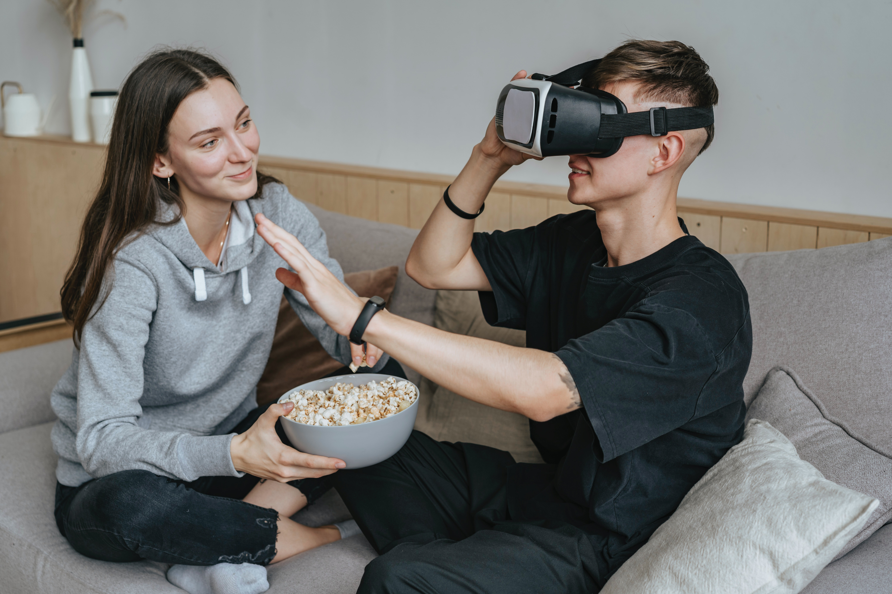
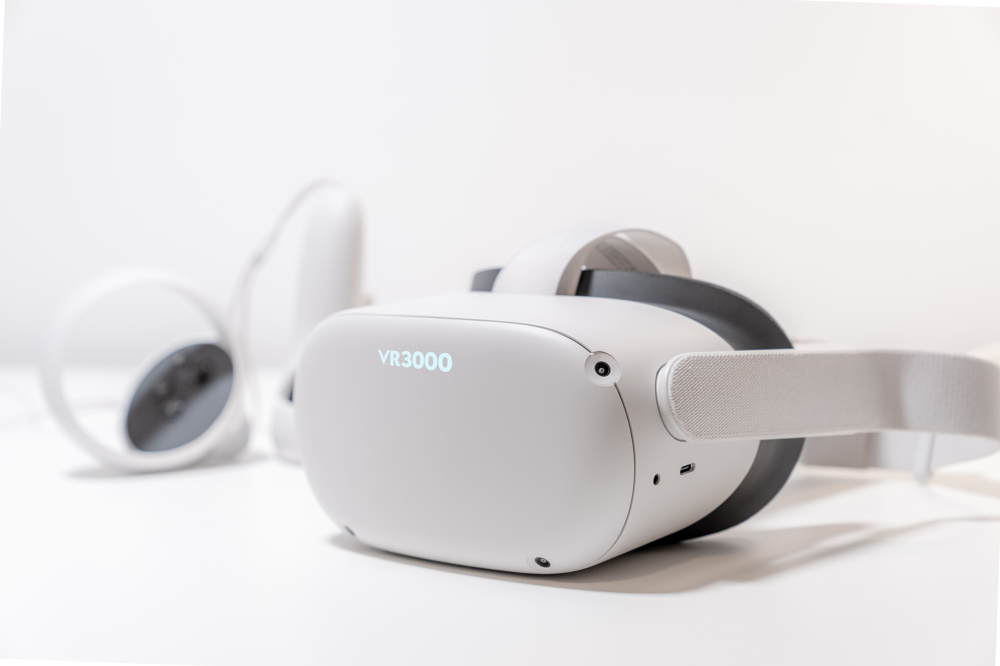

NEW TECHNOLOGY
To Infinity and Beyond!

Shannon Grey
August 8, 2023
VR has become a phenomenal piece of technology that has shaped the way we understand the capabilities of technology. Most importantly, it is awesome that we are able to do things thought unimaginable.

Vanessa Barns, lead technology specialist at TechYes, says she believes that this new VR headset technology will be available for many people very soon."

Vanessa has worked at TechYes for over 10 years and has profound industry experience.
However, the cost will change most people’s decisions as it is quite costly to the average working Australian. But don't let the cost fool you.
One of the top VR headsets in the world today is the VR3000. This headset includes features such as the ability to watch any movie with subtitles, language translations, profanity filters, inbuilt surround sound hearing capabilities and the list goes on.

Those who are disadvantaged with hearing and sight impairments are also able to be included in this experience with the enhancive abilities to use vision and audio adjustment features.
This headset comes with more surprises. Families can synchronise their individual headsets as well. Parents are able to guide younger audiences through the media with the parental remote features.
Family man Mark says "I am so glad we can experience this new headsets while being able to control how much and what our kids watch especially in a time like this where there is inappropriate content with no filter available for everyone to view"

Left to Right: Mark, his son Max (8), his wife Clarissa, and his daughter Stephanie (11).